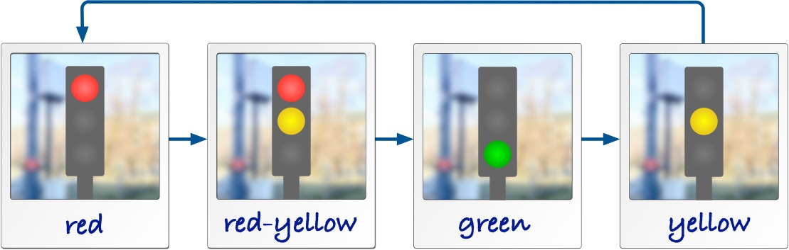
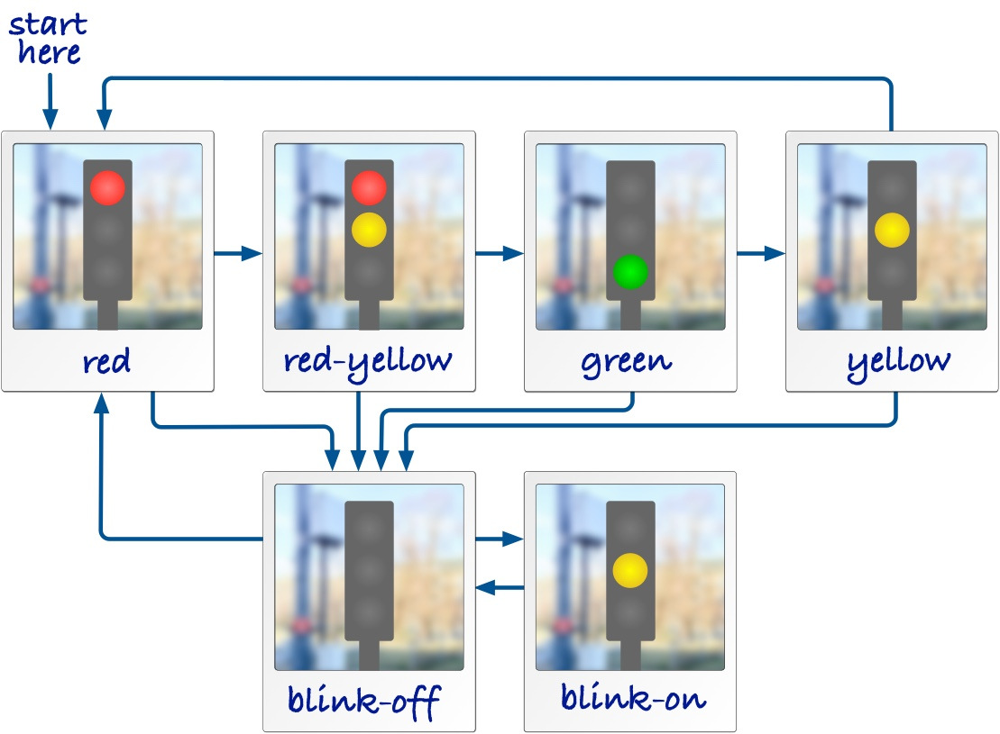
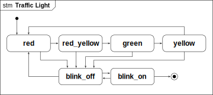
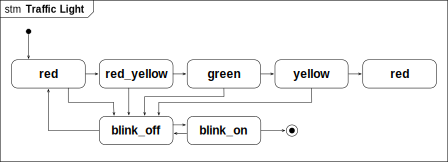
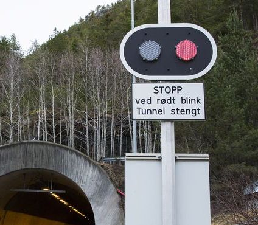

State Machines
So far, you have learned how to use Python to program a device. We have used functions to control the components of the devices, like the LEDs, to find out if buttons have been pressed or read sensor values. We used a simple application pattern, in which we had a main while-loop. For simple applications, this is sufficient and works well. But this way of programming can quickly get very complicated, if you want to build more complex applications and solve a bit more difficult issues. This single while loop would very quickly get very complex.
“I can handle complicated code!” you could say. But even if that would be true, we need to be careful. When designing a system, the goal is not only to get some code that works. We also need to document how the system works, so that it can be as simple as possible for others to understand as well. Some code may be extremely relevant for the safety of a system, or critical in other ways.
This week we will learn a way to express more complicated behavior using the concept of state machines. This is a concept that you will meet again in other courses, because state machines are a useful tool to describe behavior, and especially behavior where several things are going on at the same time. Communication protocols can be described and built with state machines, and systems can express how they synchronize their behavior using state machines.
For IoT, state machines can be useful to describe how a device controls its behavior, and we will use it to create some more complex examples.
Learning Goals
After this week, you will be able to:
- Create and understand simple state machines.
- Program a transition method in Python.
- Find some design flaws in simple state machines.
Hello, State Machines!
Let’s assume we need to describe how a traffic light works. One idea is to just take pictures of a traffic light, like this:
That already helps — the photos describe the phases in which we can observe the traffic light. Whenever we look at the traffic light, it is in one of the phases described by the photos. For easier reference we have even given these photos some labels, intuitively red, red-yellow, green and yellow. (The red-yellow is common in many, but not all countries.)
The photos already help explaining the traffic light. But imagine you want to explain on paper in which sequence a traffic light switches its lights. One way is text, but a simpler way is to add arrows between the photos, like this:

Of course, the picture above is a simplification. Some traffic lights are switched off at night and just blink yellow. The same happens as a default state in case there is an error in the controller. We can show this blinking with the two additional photos blink-off and blink-on. The two arrows between them show how the blinking is created by two phases, one with the yellow light on and one with all lights off. We also show that blinking can be started from any of the other phases, because an error can always happen, and the lights may be switched off at any time. When we get out of the blinking sequence, we go towards the phase red for safety.

That’s a complete and detailed description of a traffic light. As one last thing we add an arrow to mark in which phase a traffic light starts once it is switched on for the first time. For safety, we put it into red first.
State Machine Diagrams
For the traffic light above we described actually a state machine. Since taking photos of real objects is cumbersome, and we also want to describe abstract things we cannot take a photo off, we replace the photos above with a more convenient symbol, a rectangle with rounded corners. These are the states in which the traffic light can be. A state machine for the traffic light looks then like this:

Notice the detailed elements in this diagram:
- The states are shown as rounded rectangles. The state names are shown in bold text. As a naming convention, we only use lowercase letters, numbers, and underscores for state machine names, similar to rules for variable names in programming languages.
- The start of the state machine is shown by a compact black dot. This is also a state, called the initial state. Once the state machine is activated, it starts at this initial state.
- We assume that a traffic light only can be turned off from the state blink_on. This is shown by the final state, which is the circle with the extra border.
States
State symbols with the same name refer to the same state. This means, we can use a copy of the state symbol to make our layout easier, without changing what we actually mean by the diagram. For instance, we can remove the long arrow from state yellow to state red just by having another copy of the symbol for state red:

The diagram describes exactly the same behavior. Both state symbols for the state red refer to the same state, so our traffic light still has the same number of states, just its layout changed. In this simple state machine this doesn’t really matter, but this can help you to create better layouts once state machines become larger.
State Names: Selecting good names for states can help making state machine easier to understand, especially when the states map to phases of the thing we want to model, like on and off for a lamp, or open and close for a lock. But sometimes there is no obvious good name. In such cases, I recommend to use state names like s0, s1. You always have the possibility to attach a note to a state and explain what it means.
Transitions
The arrows between the states are called transitions. We have said above that the state machine is at any point in time in exactly one of its states. It is not in two or more of them at the same time, and it is never somewhere in between. Conceptually, this means that a state machine switches from one state to another within no time at all, meaning that transitions take no time.
To understand this property, think of a state machine as a board game, where you move a token from one place to another. A token can only rest on the board, in one of the designated places. When you throw a dice and move forward, you need to pick up the token and move it into the next place. Of course, during that process, the token is briefly in the air. But nothing else is allowed to happen during that time. The other players will just look at what you are doing and not move their own tokens. So practically, the token moved from one place to another in no time. In the same way, a state machine is moving between its states by executing a transition, and nothing else happens while they execute.

Triggers
So far, we have not yet talked about when a transition happens, this means, what triggers a transition. We have, for example, not described when the traffic light switches from red to red_yellow. There are three types of events that can trigger transitions in a state machine:
- The state machine is started, then its transition from the initial state is triggered. This happens when the component or code surrounding the machine is started and then starts up the machine, for instance when we boot our firmware and the software starts running.
- The state machine observes the expiration of a timer. Timers are managed by the machine itself, and we will learn how timers can be started and stopped later.
- When we work with the Microbit, the events can be actions from the user, like pressing any of the buttons, or that device detects a gesture.
A transition must have exactly one trigger. Without one, it would never be started at all. For simplicity, we also don’t allow more than one trigger. A trigger is declared using a label on the arrow, followed by a /. This means that you should have a trigger label at all transitions.
The only exception to this rule are transitions starting at initial states, because their trigger is implicitly the start of the entire machine.
Actions
Let’s have a look at a blinking light that you find often at the entry of tunnels. The light blinks with two lamps to indicate that the tunnel is closed. The blinking happens so that either the left lamp or the right lamp are on, and they switch every second.

From our experience with the more complex traffic light, this should be an easy state machine to write down. It has two states, leftand right, corresponding to one of the lamps being switched on. We also added labels to some of the transitions. They describe that the state machine switches from state left to state right triggered by an event t1. This is a timer. It switches back with a timer t2. The detailed timer operations are not yet visible, we come later to that.
Now we also want to specify the actions to switch the individual lamps on and off. We assume that we have for this the actions left_on(), left_off(), and right_on(), right_off(). We already use Python syntax for these actions. In our state machine diagram we can use these actions and add them to the transitions.
The actions are also called an effect of the transition, and happen at the same instant the transition is executed, that means, when we switch states. The effects are written behind the / of the transition label.
- The state machine runs action
left_on() when it starts, as declared by the initial transition.
- When the machine switches from state
left to right, it runs actions left_off() and right_on(), separated with a ;.
- When the machine switches from state
right to left, it runs actions right_off() and left_on(), separated with a ;.
- When the blinking light switches off and moves into the final state, we run actions
left_off() or right_off(), depending on in which of the two states we are.
Timers
The expiration of a timer can trigger a transition. By convention, we name timers with a prefix t, like for example t0. To declare that a transition is triggered by a timer, we simply write the name of the timer in the beginning of the transition label.
State machines manage timers on their own, wich also means that timers can only be started as part of an action within the same state machine. As we anticipate already our implementation in Python, we use the following syntax for controlling timers:
start_timer(t1, 1000) starts a timer with name t1 that will expire after 1000 milliseconds. If we invoke this action again while the timer is active and has not yet expired yet, the countdown will again start from the beginning, i.e., we expect the timeout 1000 milliseconds from the last call of start_timer(t1, 1000).stop_timer(t1) stops a timer, so that a timeout will not happen in the future. In case this action is called but t1 already expired or was never started before, nothing happens.
Spaghetti Timer Example
Imagine we want to describe the behavior of a simple spaghetti timer. This timer expires after 10 minutes and then beeps for 3 seconds. We can do this with the state machine below.
Decisions
In some cases, we want to have a choice in which state a transition should switch, based on conditions in data. As an example, let’s look at the incomplete state machine below. It describes a part of a controller for a heater. In state heater_on we wait for 1 second for timer t, which triggers the transition towards the choice state. This choice state has two alternative branches, distinguished by two guards, in rectangular brackets. Think of them as an if-statement in a programming language. (And that is actually how we will later implement them.) If the temperature is okay, we switch into state heater_off. If not, we take the else-branch and restart the timer, to check again in another 1000 milliseconds.
Don’t worry too much about what to write into the guard for now. This will get clearer once we implement state machines in Python.
A decision can have many outgoing branches. One of them must have a guard that is true, otherwise the state machine would be blocked. I therefore recommend to have an else-branch, which is true whenever none of the other branches is true.
Errors in State Machines
You may think: “Why do we need all these rules for state machines?” This is because we want to describe behavior precisely, in such a way that it is unambiguous (everyone knows what it means) and so that it does not contain any errors, or at least that errors would be easy to find.
In the following we are going to describe some examples of state machines that contain an error or that are somehow problematic, in the sense that they show behavior that is probably not intended or useful for an application.
Missing Initial States
When the initial state is missing, we don’t know where to start the state machine. So every state machine must have exactly one initial state.
Missing Triggers
Every transition out of an ordinary state needs a trigger, otherwise there is no way it will ever be executed. Only the initial transition has no trigger attached, because it is implicitly triggered by the start of the machine.
Same Outgoing Triggers
Look at the example below: Imagine we are in state s1 and event e1 happens. In this state machine it is not clear if we are moving into state s2 or s3, since both transitions are labeled with the same event.
Timer is Never Started
Another example is that we wait for an even that never happens, like in the example below. A timer can only ever expire if we started it before. In the state machine, the timer t1 will never expired because it never gets started in the first place. This is almost certainly an error, because if we never want the timer to expire, we shouldn’t even declare such a transiton. So probably, the creator of the machine forgot to start the timer.
State is a Deadlock
A deadlock is a state with no way out of it, that means, a state without any outgoing transition. This can be a sign for a missing or forgotten transition. If that is desired, you can consider to use a final state to make it clear that the state machine should be terminated. In the examples above, states s_2 and s_3 are all deadlock states, because the machine never moves out of them.